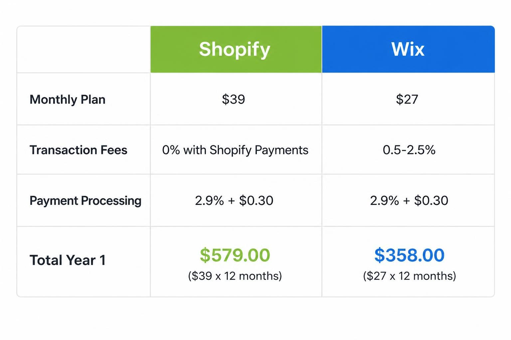
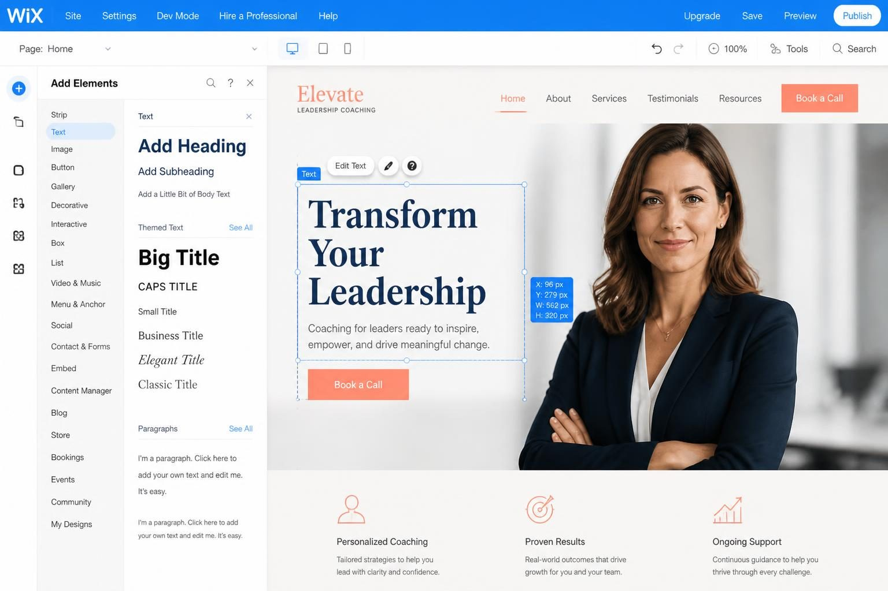
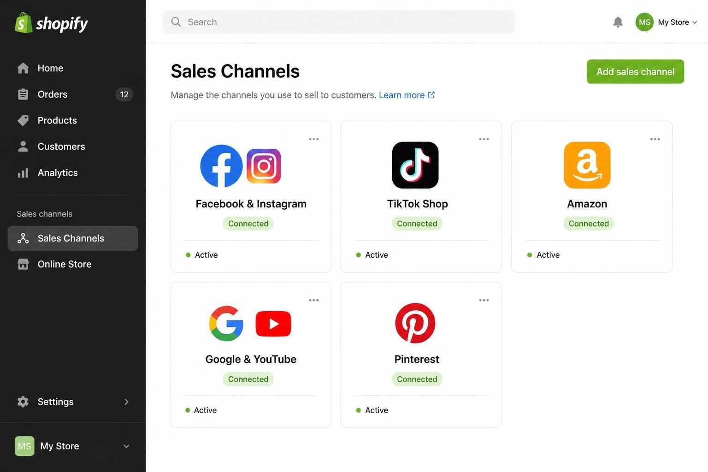
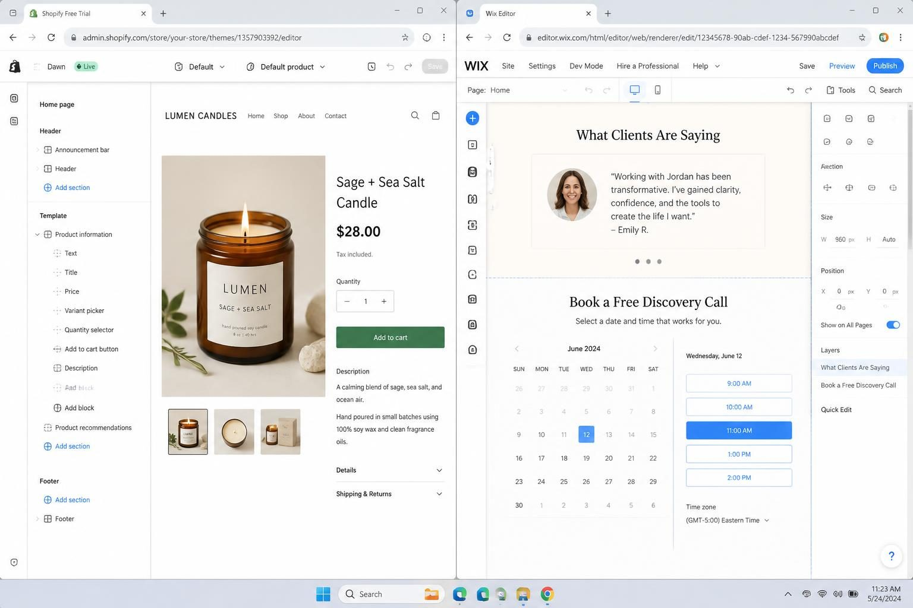

SHOPIFY VS WIX FOR ECOMMERCE: WHICH PLATFORM ACTUALLY FITS YOUR BUSINESS
Shopify is the better choice if you sell physical products as your primary revenue stream. Wix is the better choice if you run a service-based business with digital products or courses on the side. That is the honest answer - and it depends entirely on what your business actually looks like day to day.
Most comparison posts treat this decision like you are choosing between two equal options for the same type of business. They are not equal. They were built for different purposes. Shopify was designed from the ground up to sell products online. Wix was designed to build websites - and added ecommerce features later. That fundamental difference affects everything from how your checkout converts to what you pay in hidden fees.
If you are a coach, consultant, or service provider who also sells digital products, templates, or courses, you have different needs than someone shipping candles to 500 customers a month. And yet most guides lump you all together.
Here is what I want you to walk away with: a clear framework for deciding which platform fits your specific business model, an honest breakdown of what each one actually costs when you add up all the extras, and the confidence to make a decision without second-guessing yourself for months.
You do not need to read every feature comparison on the internet. You need to understand which platform matches how you actually make money.
WHY THE "WHICH IS BETTER" QUESTION IS THE WRONG STARTING POINT
The question itself sets you up for confusion. Better for what? Better for whom?
A life coach selling a $497 course and monthly group coaching sessions has completely different platform needs than someone selling handmade jewelry with 200 SKUs and shipping to three countries. Asking which platform is "better" without defining your business model is like asking which car is better without knowing whether you need to haul equipment or commute in city traffic.
So what do you actually need to know first?
Your primary revenue source matters more than features. If 70% of your income comes from one-on-one coaching and you sell a digital workbook on the side, your website needs to build trust, explain your services clearly, and make booking easy. A robust inventory management system is irrelevant to you. But if you are running a product-based business - even a small one - shipping calculations, inventory tracking, and abandoned cart recovery suddenly become essential.
Here is a quick filter I use with business owners who are stuck on this decision:
What percentage of your revenue comes from selling products (physical or digital) versus delivering services?
- If selling products is 50% or more of your revenue - lean toward Shopify
- If services are your core business and products are supplementary - lean toward Wix
- If you genuinely split 50/50 - read the rest of this post very carefully before deciding
This is not about which platform has more features. It is about which platform was built for businesses that look like yours.
DALL-E / ChatGPT image prompt
A realistic mockup of a simple decision flowchart on a clean white background. Two paths branch from a center question "What's your primary revenue source?" - left path labeled "Services (coaching, consulting, 1:1 work)" leads to "Wix" in a soft blue box, right path labeled "Products (physical or digital goods)" leads to "Shopify" in a green box. Modern flat design, minimal aesthetic, easy to read text in dark grey sans-serif font. Landscape 16:9, high resolution.
THE REAL COST COMPARISON (NOT JUST BASE PRICES)
Every comparison article lists the monthly plan prices. Almost none of them calculate what you will actually spend.
Shopify's Basic plan starts at $39/month. Wix's Business Basic plan (the minimum for accepting payments) starts around $27/month. Looks simple. But that is not the whole story.
Transaction fees are where the real money hides. If you use Shopify Payments (Shopify's built-in payment processor), you pay 0% in additional transaction fees - just the standard credit card processing rate. If you use a third-party payment gateway, Shopify charges an extra 2% on every sale. Wix charges transaction fees on all ecommerce plans except their highest tier (Business Elite). On the basic ecommerce plans, you could be paying an extra percentage on every single order.
For a business doing $5,000/month in sales, even a 2% fee means $100/month gone - more than the price difference between the platforms.

Apps and add-ons inflate Shopify costs quickly. Shopify's app ecosystem is massive - over 8,000 apps. That sounds like a benefit until you realize many essential features require paid apps. Want recurring payments for a membership? That is an app ($20-50/month). Need to deliver digital products properly? App. Booking integration for consultations? App. A service provider on Shopify can easily spend $50-150/month in apps before their store does anything useful.
Wix includes many of these features natively. Wix Bookings is built in. Wix Learn handles courses. Wix Members manages memberships. The depth is not as robust as dedicated Shopify apps, but for smaller operations, native features are often enough.
Calculate your true Year 1 cost before choosing a platform. Here is what to include:
- Base monthly plan (x12)
- Payment processing fees based on projected sales
- Transaction fees (if applicable)
- Apps or integrations you genuinely need
- Theme cost (if not using a free one)
When I do this math with clients, the "cheaper" platform often flips halfway through the calculation.
WHERE WIX WINS (AND WHO SHOULD CHOOSE IT)
Wix is not the underdog people make it out to be. For certain business models, it is genuinely the better choice - not a compromise.
Design flexibility is unmatched. Wix gives you pixel-level control over your layout. You can move elements anywhere on the page, customize spacing exactly how you want, and create a site that looks nothing like anyone else's. If your brand aesthetic matters as much as your functionality - and for many service providers, it does - this matters.
Shopify themes are more rigid. They are designed to be efficient storefronts, not expression of brand identity. You can customize colors and fonts, but the underlying structure stays fixed. For someone selling physical products, that constraint is fine. For a brand photographer or creative coach whose website IS their portfolio, it can feel limiting.

Built-in features reduce complexity. Wix includes:
- Wix Bookings for appointment scheduling
- Wix Learn for hosting courses
- Wix Blog with solid SEO tools
- Native email marketing (basic but functional)
- Video hosting for membership content
None of these require third-party integrations or monthly app fees. For a coach selling a self-paced course, a membership, and offering one-on-one sessions, Wix handles all three without adding to the monthly bill.
The AI site builder has improved significantly. Wix's AI-powered setup (introduced in late 2024 and refined through 2025) genuinely speeds up the launch process for non-technical founders. You answer questions about your business, and it generates a functional starting point. It is not magic - you still need to customize - but it reduces the "blank page" paralysis that keeps people stuck for weeks.
Who should choose Wix?
- Service providers where the website is primarily a trust-building tool
- Coaches selling courses, memberships, or digital products as secondary revenue
- Anyone who wants complete design control without hiring a developer
- Businesses with fewer than 50 products who do not need advanced inventory management
If you are in this category and want to skip the design phase entirely, premade Wix templates for service providers can get you from idea to published site in a weekend instead of a month.
WHERE SHOPIFY WINS (AND WHO SHOULD CHOOSE IT)
Shopify was built for selling. Every feature, every default setting, every checkout optimization serves that purpose. If products are your primary business, this single-minded focus is an advantage.
Checkout conversion is optimized by default. Shopify has spent years testing and refining its checkout experience. Shop Pay - their accelerated checkout - claims a 91% higher mobile conversion rate than standard checkouts. (That number comes from Shopify's own data, so take it with appropriate skepticism, but the underlying point stands: they obsess over conversion in ways general website builders do not.)
Multi-channel selling is native. Shopify connects directly to:
- Instagram and Facebook Shops
- TikTok Shop
- Amazon
- Walmart Marketplace
- Pinterest (product pins sync automatically)
- Google Shopping
Wix has some integrations here, but they are not as deep. If selling across multiple channels is part of your growth strategy, Shopify makes this significantly easier.

Inventory management scales. Once you hit 100+ products, multiple product variants, or need to track inventory across locations, Shopify's infrastructure handles it without breaking. Wix's inventory features work for smaller catalogs but show their limits as you grow.
Abandoned cart recovery is included on all paid plans. This single feature can recover 5-15% of lost sales. Wix includes it too - but only on higher-tier plans. On Shopify, even the basic plan sends automated emails to people who left items in their cart.
Who should choose Shopify?
- Product-based businesses where ecommerce is the primary revenue
- Anyone planning to sell on multiple channels (Instagram, Amazon, etc.)
- Businesses with 50+ products or complex inventory needs
- Brands planning to scale significantly in the next 2-3 years
DALL-E / ChatGPT image prompt
A realistic mockup screenshot of Shopify's admin dashboard. Clean white interface with dark grey left sidebar showing: Home, Orders, Products, Customers, Analytics, Marketing, Discounts. Main content area displays a sales overview card showing "Total sales: $12,847" with a green upward trend line, "Online store sessions: 3,241", and "Returning customer rate: 28%". Top right shows store name and notification bell. Modern flat UI, Shopify green (#95bf47) accent color on buttons. Landscape 16:9, high resolution.
STEP-BY-STEP: HOW TO MAKE THIS DECISION WITHOUT OVERTHINKING
Stop comparing feature lists. Follow this process instead.
Step 1: Define your actual business model in one sentence.
Write it down. "I am a [type of business] and I make money primarily by [main revenue source]." If you cannot complete that sentence clearly, you have a clarity problem before you have a platform problem.
Step 2: List the features you genuinely need - not the ones that sound nice.
Go through this checklist:
- Physical products, digital products, services, or a mix?
- How many products/offerings? (Under 30 / 30-100 / 100+)
- Do you need recurring payments or subscriptions?
- Do you need appointment booking?
- Will you sell on Instagram, Amazon, or other channels?
- How important is blog content to your marketing?
- How custom does your design need to be?
Step 3: Calculate Year 1 costs for both platforms.
Do not skip this. Use the framework from earlier:
- Base plan cost x 12 months
- Estimated transaction fees (based on projected revenue)
- Apps you would actually need (list them, price them)
- Theme cost if not using free
If one platform comes out $500+ more expensive annually, that matters. If they are within $200, focus on fit over price.
Step 4: Spend 2-3 hours building on each platform.
Both offer free trials or free versions. Actually use them. Build a basic version of your homepage and one product page. Where did you get frustrated? What felt intuitive? Your gut reaction after hands-on experience is more useful than reading ten more comparison posts.

Step 5: Consider where you will be in two years.
If you are planning to stay intentionally small - a handful of digital products, a focused service offering, clients you handpick - Wix's simplicity is a feature, not a limitation. If you are planning to scale to hundreds of products, hire staff, or expand into wholesale, start on Shopify now to avoid a painful migration later.
Step 6: Make the decision and commit for 12 months.
Platform-hopping wastes time and money. Once you choose, invest in learning your platform properly. Blame the platform only after you have actually maxed out what it can do.
THE MIGRATION QUESTION: SHOULD YOU SWITCH IF YOU ARE ALREADY ON ONE?
This is the question the comparison posts ignore - but it is the one many readers actually have.
You already built your site on Wix two years ago. Or you started on Shopify because someone told you it was better. Now you are wondering if you made the wrong choice.
Here is my honest take: switching platforms is almost never as urgent as it feels.
Migration is expensive. Not just in money (though there is that too - rebuilding, redirecting URLs, potential SEO disruption). It is expensive in time and energy you could spend actually running your business. Unless your current platform is actively preventing you from doing something critical to your growth, stay and optimize what you have.
Signs you actually need to migrate:
- Your business model has fundamentally changed (service provider → product business, or vice versa)
- You have outgrown your platform's capabilities (100+ products on Wix with multi-location inventory needs)
- You need multi-channel selling that your current platform cannot support
- Your conversion rate is significantly below industry benchmarks AND you have ruled out other causes
Signs you probably do not need to migrate:
- You saw a comparison post that made you doubt your choice
- A competitor uses a different platform
- You have not actually tested your current platform's full capabilities
- You are frustrated with results but have not fixed your marketing, messaging, or product-market fit
The platform is rarely the bottleneck. I have seen businesses thrive on both Wix and Shopify. I have also seen businesses struggle on both. The difference is usually strategy, execution, and consistency - not which checkout button they use.
If you do decide to migrate, keep your product data meticulously organized. Export everything. Document your URL structure. Plan for a brief SEO dip during the transition. And time it for your slow season if you have one.
FREQUENTLY ASKED QUESTIONS
How much does Shopify take from each sale?
Shopify's credit card processing rate is 2.9% + $0.30 per transaction on the Basic plan (lower on higher plans). If you use Shopify Payments, that is the only fee. If you use a third-party payment processor like PayPal or Stripe, Shopify adds an extra 2% transaction fee on top of whatever your processor charges. So a $20 sale using Shopify Payments costs you about $0.88 in fees. Using a third-party processor, you could pay $1.28 or more.
What is the number one ecommerce platform?
It depends how you measure. Shopify powers over 5.9 million live stores and dominates among dedicated ecommerce platforms. WooCommerce (a WordPress plugin) has more total installs but requires more technical setup. For small business owners who want something ready to use without coding, Shopify and Wix are the two most practical options - with Shopify leading for product-focused businesses and Wix leading for service providers who need a website first and a shop second.
Can you realistically make $10,000 per month on Shopify?
Yes - but the platform is not what determines this. Making $10,000/month requires a product people want, traffic sources that work, pricing that leaves room for profit, and consistent execution. Plenty of Shopify stores make far more than that. Plenty make nothing. The platform handles the transactions. Your marketing, product, and business model determine the revenue.
Is Wix good enough for a real ecommerce business?
For the right type of business, absolutely. A service provider selling 10-30 digital products, courses, or templates can run a completely legitimate business on Wix. The limitations show up when you scale beyond 100+ products, need advanced inventory tracking across multiple locations, or want to sell heavily across channels like Amazon and TikTok Shop. For smaller, service-first businesses, Wix is not a compromise - it is often the better fit.
Which platform is easier to use for beginners?
Wix has a gentler learning curve for people who want visual, drag-and-drop customization. The AI site builder accelerates the initial setup significantly. Shopify's dashboard is clean and logical, but the theme customization options are more limited unless you know code (or hire someone). For complete beginners who want design flexibility, Wix is easier. For beginners who want guided structure with less decision-making, Shopify can actually feel simpler.
CHOOSING A PLATFORM IS A BUSINESS DECISION, NOT A PERSONALITY TEST
The shopify vs wix for ecommerce debate has been going on for years, and most of the content out there misses the point. They compare features like you are shopping for a phone instead of choosing infrastructure for your business.
Here is what actually matters: your business model. That determines everything.
If you sell physical products and want to grow across multiple channels - Shopify's infrastructure is built for that. Accept the learning curve and the app costs as investments in scalability.
If you are a coach, consultant, or service provider who sells digital products on the side - Wix handles your actual needs (booking, courses, memberships, beautiful design) without the overhead of a platform built for shipping warehouses.
Neither platform is objectively better. One is better for you.
Make the decision. Commit for a year. Stop second-guessing and start building.
And if you have decided Wix is the right fit for your service-based business and want to skip months of design work, browse the premade Wix website templates - designed specifically for coaches, consultants, and service providers who need to launch this month, not this year.
Let me know in the comments below if you want me to cover any branding or marketing topics in more depth, and I'll make sure to create a blog post about it in the future.